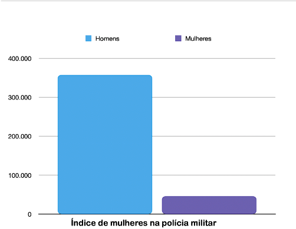
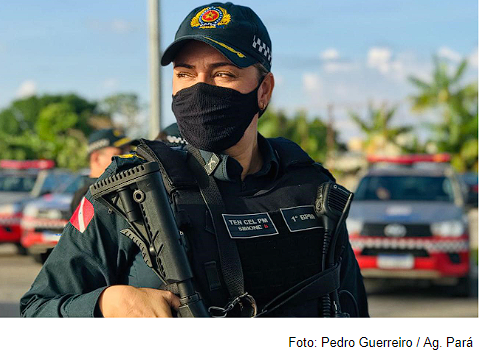
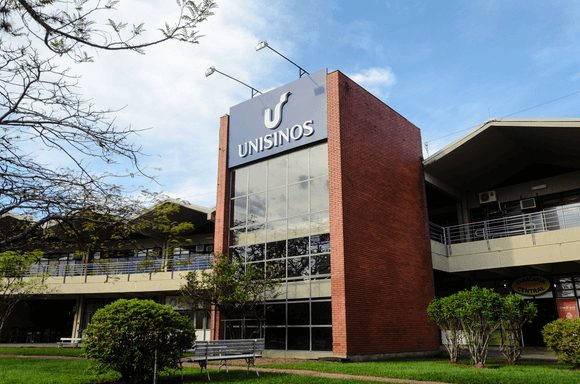
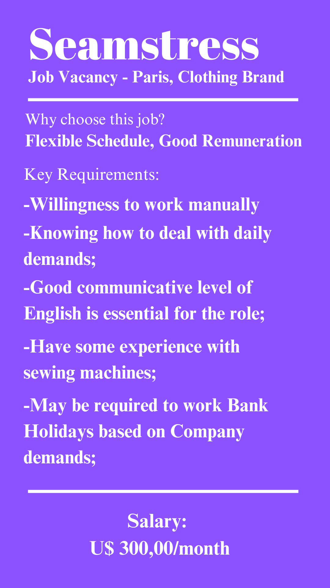

LINGUAGENS
LÍNGUA PORTUGUESA
Coragem e Resiliência: As Mulheres na Polícia Militar e Suas Lutas Diárias
Nos corredores das instituições policiais em todo o mundo, um grupo notável de mulheres enfrenta diariamente desafios únicos e adversidades enquanto juram proteger e servir. Nesta reportagem, mergulhamos no mundo das mulheres na Polícia Militar, revelando as histórias corajosas e as dificuldades que elas enfrentam ao equilibrar suas carreiras em uma profissão tradicionalmente dominada por homens. Por trás das fardas e distintivos, encontramos narrativas de resiliência, determinação e a busca contínua por igualdade em um ambiente muitas vezes marcado pela desigualdade de gênero. Este relato detalhado não apenas lança luz sobre as lutas diárias dessas mulheres incríveis, mas também ressalta a importância de promover a diversidade e a inclusão dentro das forças de segurança para um futuro mais equitativo e seguro para todos.
No Rio de Janeiro, as mulheres somente conseguiram seu direito de ingressar no quadro da Polícia Militar em 1982, no processo de redemocratização do país. Hoje, no Brasil, são 357.501 homens e 46.180 mulheres entre praças e oficiais, no total. As mulheres fazem parte de apenas 12% do efetivo das Polícias Militares, segundo dados da Pesquisa Perfil das Instituições de Segurança Pública. Segue abaixo o gráfico da representação destes números:
O abismo entre estes números reforça a desigualdade de gênero existente nas instituições de segurança pública.
A prática da desigualdade
O preconceito em relação ao gênero existe há muito tempo e está enraizado em nossa sociedade. Embora, as mulheres tenham conseguido quebrar inúmeras barreiras, antes consideradas impossíveis, ainda sofrem com diversos obstáculos em suas carreiras. Desde disparidades salariais até desafios culturais e falta de oportunidades de promoção, a desigualdade de gênero na Polícia Militar exige uma atenção urgente. Este é um reflexo não apenas de uma sociedade que ainda luta contra estereótipos de gênero, mas também de um sistema que precisa se adaptar e evoluir.
Mesmo hoje, as oportunidades profissionais não são igualitárias. Nas Polícias Militares, a entrada é controlada por meio de cotas, tornando-a reduzida e fazendo com que os quadros femininos se expandam lentamente. As mulheres, em sua grande maioria são direcionadas e ocupam cargos burocráticos e administrativos em oposição às atividades nas ruas.
O que as mulheres no cotidiano acham disso?
Realizamos entrevistas com diversas mulheres que encontramos na Universidade do Vale do Rio dos Sinos – Unisinos, e fizemos profusas perguntas sobre nosso tema. Perguntamos como se sentiriam trabalhando em locais e profissões considerados masculinos e recebemos o mesmo tipo de resposta, em unânime.
“Sufocada; Intimidada; Sexualizada; Desconfortável; Não levariam minha opinião à sério; No dever de dar o meu máximo para mostrar que posso;”
Foram algumas das respostas que obtivemos. Perguntamos se elas se imaginavam trabalhando nestes locais e cerca de 80% responderam que não. Questionamos, portanto, se elas viam alguma disparidade entre a quantidade de policiais homens e mulheres na rua e se elas acreditavam que faltam policiais femininas nos locais públicos. Novamente, obtivemos repostas unânimes. Todas as entrevistadas responderam que sim, faltam mulheres policiais.
“Faltam policiais femininas, nós mulheres não somos obrigadas a ser revistadas por homens, existe uma lei que nos dá o direito de pedir por uma mulher na revista. Mas ela não é acatada pois faltam policiais mulheres. Os policias homens abusam da autoridade.”- Adicionou uma.
“A mulher nunca é tratada como o homem, ela é sempre desvalorizada, mesmo tendo o mesmo cargo, eu fiz Engenharia Civil e um homem também, entre nós dois, ele vai ser mais valorizado.”– Relatou uma delas.
Estes resultados apenas reforçam a disparidade, desigualdade e o preconceito de gênero existente em nossa sociedade. Devemos dar ouvido à essas mulheres e implementar políticas e mudanças dentro das forças de segurança que não apenas as reconheçam, mas também as empoderem, garantindo que todas as mulheres na Polícia Militar tenham oportunidades iguais de sucesso e ascensão em suas carreiras.
Piadinhas e Assédio: Impacto Emocional
Muitas policiais femininas relatam que se sentem “Testadas em suas habilidades, sendo pressionadas a realizar todas as tarefas sempre da melhor maneira possível. Ficam constrangidas ao serem submetidas às ‘piadinhas’ com conotação sexual, cantadas e insinuações” – Segundo Ivanira Pancheri, pós-doutoranda do Departamento de Direito Penal da Faculdade de Direito da USP.
Imagem Campus Unisinos, logal da entrevista
LÍNGUA INGLESA
É inadmissível que estas profissionais, que são tão qualificadas quanto os homens, determinadas à proteção de nossa comunidade, tenham de lidar com assédios e piadinhas diariamente em suas carreiras. O assédio dentro da Polícia Militar é um problema alarmante que há muito persiste nas sombras das instituições de segurança.Apesar dos esforços para combater o assédio no ambiente de trabalho, muitas policiais enfrentam situações humilhantes, constrangedoras e até mesmo abusivas em silêncio, temendo represálias ou a falta de apoio para denunciar essas práticas prejudiciais.
Este é um desafio que atinge mulheres e homens, e suas consequências são carregadas e trazem marcas profundas, afetando não apenas o bem-estar e a saúde mental destas mulheres, mas também a eficácia e a moral das equipes de segurança pública. Já é hora de falarmos sobre essa pauta sensível e enfrentá-la de maneira firme, promovendo um ambiente de trabalho seguro e respeitoso, onde todos os membros da Polícia Militar possam desempenhar suas funções com dignidade e igualdade.